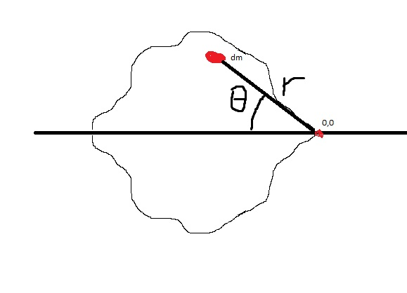

phyknight22 set 2014, 14:26
Faccio una cosa strana...metto due problemi, ma basta risolverne uno per andare avanti nella staffetta.
Perché faccio questo? perché mi è stato detto di mettere un problema difficile...ma forse quello che ho scelto è davvero troppo...per questo ne metto un altro più facile ma comunque molto bello.
1)Una particella che ha massa \(m\) si muove su una traiettoria circolare (con velocità non relativistica) intorno all'origine, grazie ad una forza attrattiva \(f(r)=-kr\) con \(k\) una costante positiva.
Assumendo che il momento angolare della particella sia quantizzato:
a) trovare l'energia totale (cinetica + potenziale) della particella, ponendo l'energia potenziale all'origine \(U(0)=0\)
b) determinare la lunghezza d'onda del fotone che porta alla transizione tra due livelli energetici consecutivi
2)Abbiamo un certo volume \(V\) di un materiale di densità \(\rho\).
Preso un punto materiale P di massa \(m\), modelliamo il nostro volume di roba in modo tale da rendere massima l'attrazione gravitazionale su P.
Quanto vale il rapporto tra questa forza e la forza che si avrebbe se il nostro materiale avesse forma sferica (e fosse posto ovviamente alla stessa distanza da P)?
andrea9622 set 2014, 16:05
1)
Allora chiaramente a ogni orbita è associata un energia, ma per la quantizzazione del momento angolare non tutte le orbite sono possibili. Tuttavia questo fatto non influisce affatto nel punto a) nel quale ci interessa solo sapere quanta energia è associata a un orbita di raggio \(r\) ( chiaramente nell'ipotesi che a essere quantizzato è il momento angolare e non la forza, ma questa non mi sembra essere un ipotesi ne del problema della della meccanica quantistica in generale... ). Per il punto a) non teniamo quindi minimamente in considerazione la quantizzazione. L'energia potenziale si calcola o integrando \(f(r)=-kr\) tra \(0\) e \(r\) e cambiandogli il segno, o dicendo banalmente che è equivalente all'energia potenziale di una molla. Comunque la si voglia vedere si ha \(U(r)=\frac{1}{2}kr^2\).
Ora visto che le orbite sono circolari \(f(r)\) è una forza centripeta e quindi \(m\frac{v(r)^
2}{r}=|f(r)|=kr\), cioè \(v(r)=r\sqrt{\frac{k}{m}}\)
Allora:
\(K=\frac{1}{2}mv^2=\frac{1}{2}kr^2=U(r)\) e \(E(r)=U(r)+K(r)=2U(r)=kr^2\)
Ora per il punto b) assumiamo che \(mvr=nL_0\) dove \(L_0\) è il momento angolare dell'orbita più piccola e potrebbe essere preso uguale a \(\frac{h}{2\pi}\) ma ai fini del problema non è importante quindi lasciamo \(L_0\).
Possiamo mettere insieme la quantizzazione del momento angolare e la relazione tra raggio e velocità per ottenere una quantizzazione del raggio \(r_n=\sqrt{\frac{nL_0}{\sqrt{km}}}\)
e una quantizzazione dell'energia \(E_n=nL_0\sqrt{\frac{k}{m}}\)
Ora se la particella passa dal livello \(n\) al livello \(n-1\) perde la quantità di energia \(E_n-E_{n-1}=nL_0\sqrt{\frac{k}{m}}-(n-1)L_0\sqrt{\frac{k}{m}}=L_0\sqrt{\frac{k}{m}}\)
verrà quindi emesso un fotone con quell'energia, e utilizzando la relazione di Plank \(L_0\sqrt{\frac{k}{m}}=h\frac{c}{\lambda}\)
e se reinseriamo l'ipotesi \(L_0=\frac{h}{2\pi}\) per abbellire la forma:
\(\lambda=2\pi c\sqrt{\frac{m}{k}}\)
andrea9622 set 2014, 16:12
attendo phyknight per sapere se ho sbagliato qualcosa e vorrei anche sapere nel secondo problema se quando modelliamo il volume il centro di massa deve rimanere nello stesso punto...grazie 8-)
phyknight22 set 2014, 19:15
Forse il primo problema era troppo facile...neanche 2 ore... :(
1) moralmente il risultato mi torna, solo che avrei preferito la risposta a) non in funzione di \(r\), ricavando \(r\) dalla quantizzazione del momento angolare.
In questo modo viene \(E=n\hbar\sqrt{\dfrac{k}{m}}\) e vedi subito che tra due livelli energetici consecutivi \(\Delta E=\hbar\sqrt{\dfrac{k}{m}}\), però va benissimo così, ecco, l'unica differenza è che con l'energia scritta in funzione di \(n\) vedi subito come "salta", perché, come hai giustamente scritto tu, non tutti i valori di \(r\) sono possibili (solo quelli del tipo \(r=\sqrt[4]{\dfrac{n^2\hbar^2}{km}}\))
Comunque ok, la staffetta è nelle tue mani
2)mi sembra di no, e mi hai fatto capire che per come ho scritto l'ultima parte del problema non si capisce quello che si deve capire (colpa mia): per distanza intendo la "minima distanza", cioè la distanza tra P e il punto più vicino a P della massa "di roba a densità costante" (o della sfera)
andrea9622 set 2014, 19:29
phyknight ha scritto:Forse il primo problema era troppo facile...neanche 2 ore... :(
direi di si :lol: il secondo però mi sembra parecchio interessante ed ora ci sbatto un po la testa ;)
per la staffetta sono un po in difficoltà sul problema da postare ma appena ce l'ho lo metto.
Puoi darmi solo un indizio? per il problema 2 devo partire in modo bruto impostando le condizioni e risolvendolo con matematica avanzata o ( come credo ) devo cercare un metodo intelligente che mi salva dal risolvere complicatissime equazioni?
phyknight22 set 2014, 19:35
per il secondo il mio consiglio è cercare prima di capire come si deve modellare l'oggetto per avere il massimo (con considerazioni furbe) e poi alla fine lo confronti con la sfera sempre usando una considerazione furba per semplificare le equazioni (e qui vengono degli integrali un po' brutti...ma non impossibili)
OrsoBruno9622 set 2014, 21:55
Alla faccia del problema difficile, ho visto più integrali qui che nel resto della mia vita LOL
Ho avuto seri casini con gli integrali tripli, mi sono anche fatto aiutare da wikipedia, ma spero di non scrivere troppe baggianate
partiamo con le cose semplici: scegliamo un riferimento comodo
Ci mettiamo con r = 0 nel punto in cui si trova m
ora, il campo gravitazionale è un vettore, il che complica un po' le cose, perchè quando devo fare la somma devo fare una somma vettoriale, che è piuttosto fastidiosa
assumo come ipotesi (perchè non ho voglia di cercare una spiegazione sensata e perchè altrimenti sarebbe troppo complicato ;) ) che la massa da modellare venga fatta a simmetria cilindrica
mettiamoci quindi in un riferimento con l'asse di simmetria del coso che passa per l'origine del riferimento stesso
pubblico anche una immagine molto scrausa fatta con paint tanto per capire come mi sono posizionato
ora, prendiamo una piccola massa dm
\(dg = \dfrac{G dm cos \theta}{r^2}\)
adesso cerchiamo di capire come posizionare la massa in modo da ottimizzare il tutto
dunque, se io mi muovo lungo una superficie con \(\dfrac{cos\theta}{r^2} = a = costante\), il contributo di ogni dm è lo stesso. quindi, devo cercare di mettere la massa in modo che a sia più grande possibile
abbiamo tuttavia la limitazione del volume: sappiamo che \(\int \rho dV = M\)
ma \(dV = r^2 sin\theta dr d\theta d\phi\)
quindi \(M = \rho \int _{0} ^{2\pi}\int _{0} ^{\pi /2} \int _0 ^r r^2 sin\theta dr d\theta d\phi\)
ma \(r = \sqrt{\dfrac{cos\theta}{a}}\)
quindi \(M = 2 \pi \rho \int _0 ^{\pi /2} 1/3 (\dfrac{cos \theta}{a})^{3/2} d(cos\theta)\) dove ho integrato in r in modo definito sostituendolo con a e dove ho sostituito sin x dx con d(cosx) perchè poi integro con meno fatica
conti.... \(M = \dfrac{4 \pi}{15} \rho a^{-3/2}\) quindi \(a=(\dfrac{15V}{4\pi})^{-2/3}\) che è il valore che devo sostituire per ottenere il raggio giusto quando integro dopo per ottenere g
ora, visto che gli integrali non ci sono bastati, integriamo ancora
\(g = G\rho \int \dfrac{cos\theta}{r^2} dV\) che sostituendo dV come sopra diventa
\(g= 2\pi G \rho \int _0 ^{\pi /2} \int _0 ^{\sqrt{\dfrac{cos\theta}{a}}} cos\theta dr d(cos\theta)\)
sono stufo di copiare integrali quindi scrivo il risultato ;) \(g= \dfrac{4\pi}{5} G \rho a^{-1/2} = \dfrac{4\pi}{5} G \rho (\dfrac{15V}{4\pi})^{1/3}\)
domani mi interrogano su hegel quindi lascio perdere il confronto con la massa sferica che sicuramente non è il grosso del problema. attendo risposta su quello che ho scritto. :)
-
Allegati
-

- Problema.jpg (18.81 KiB) Visto 8627 volte
Simone25622 set 2014, 22:14
OrsoBruno96 ha scritto:domani mi interrogano su hegel
Piango per te
andrea9622 set 2014, 22:17
ma che roba è mai questa!!!! :lol: :lol: :lol: :lol: :lol:
non ho mai visto una cosa del genere :o
meno male che orsobruno ha pubblicato la soluzione prima che provassi per lo meno a farlo ( ma non ci sarei mai riuscito :lol: ), penso che sarei impazzito senò! chi ce l'ha la forza di fare tutti quegli integrali! (e qui vengono degli integrali un po' brutti...ma non impossibili)
le ultime parole famose
phyknight22 set 2014, 22:58
Alla faccia del problema difficile
l'ho messo per te :lol: ...e lo hai risolto in davvero poco tempo...forse ho sbagliato a mettere anche l'altro, è che temevo che avrei bloccato la staffetta :cry:
Le idee che hai usato sono giuste e furbissime...e soprattutto portano alla soluzione giusta
non controllo i conti perché anche io nel farlo Ho avuto seri casini con gli integrali tripli
e perché il risultato coincide con il mio :D
Ora resta solo l'ultima parte di confrontare i campi ma è banale...e se non sbaglio viene tipo 1.03 (ma potrei ricordare male)
Comunque manca la dimostrazione che il coso ha simmetria cilindrica, che è secondo me una delle parti più belle del problema :D (e forse è più in stile olimpiadi di matematica che fisica...però potrebbero anche esistere dimostrazioni diverse da quella che ho trovato)
desga24 set 2014, 11:00
Scusate, c'è qualcosa che non mi torna con gli integrali.
In questo passaggio,OrsoBruno96 ha scritto:dove ho integrato in r in modo definito sostituendolo con a
tratti a come costante all'interno dell'integrale, ma a me sembra che a sia costante solo sulla superficie esterna, e non su tutto il volume. Sulla superficie esterna dovrebbe essere costante perchè, se per assurdo ci fossero due punti R e Q con a(R) < a(Q), potresti prendere la massettina contenuta in una regione attorno a R in cui a< (a(Q)+a(R))/2
(esiste per continuità di \(\dfrac{cos \theta}{r^2}\) ) e trasferirla in una regione di Q in cui a > (a(Q)+a(R))/2 , ottenendo un incremento del campo totale.Tuttavia mi sembra che a possa variare all'interno: infatti se ti avvicini al punto P "da dentro" in maniera appropriata, ad esempio lungo delle rette, a diventa grande a piacimento.Mi sbaglio io?
OrsoBruno9624 set 2014, 14:17
forse ho saltato troppi passaggi
quello che ho fatto è integrare così:
\(\int _0 ^{\sqrt {\dfrac{cos \theta}{a}}} r^2 dr\)
non \(\int _0 ^{\sqrt {\dfrac{cos \theta}{a}}} (\sqrt {\dfrac{cos \theta}{a}})^2 dr\) così, che è diverso e sbagliato. se avessi voluto integrare in questo modo, avrei dovuto scrivere dr = f(da) e integrare in da, ma mi complicavo la vita inutilmente
ho capito quello che mi stavi contestando oppure mi stavi dicendo che non sei d'accordo su altro?
comunque sono d'accordo che a non è costante sul dominio di integrazione
Simone25626 set 2014, 23:45
phyknight ha scritto:Comunque manca la dimostrazione che il coso ha simmetria cilindrica, che è secondo me una delle parti più belle del problema :D (e forse è più in stile olimpiadi di matematica che fisica...però potrebbero anche esistere dimostrazioni diverse da quella che ho trovato)
Per quanto possa avere senso una soluzione scritta da cellulare dal letto con la luce spenta...
Secondo te funziona sta cosa?
Ipotizziamo che il massimo si abbia per un corpo non a simmetria cilindrica, prendiamo la retta r passante per P avente la stessa direzione del campo gravitazionale generato in tale punto. Se ad una distanza d dal punto P su r la sezione (mediante un piano perpendicolare a r) non è circolare esisterá una dm con distanza maggiore da r. Quindi prendiamola e spalmiamola sul perimetro. Così la componente lungo r aumenta perchè si è diminuita la distanza complessiva della massa da P e si è diminuito l'angolo del campo generato da ogni parte di dm su P.
Quindi si fa così su tutte le sezioni e spero abbia senso!
Ho scritto molto male e potevo esporlo in maniera moooolto più chiara! :(
Ma è davvero tardi scusa :mrgreen:
phyknight27 set 2014, 18:16
ok, è giusta :D
solo che non so se uno che non ha mai visto una dimostrazione del genere capisce subito quello che hai scritto, quindi lascio solo qualche commento per i posteri:
perché simone ha preso la retta r per P? Perché è quella su cui il campo è massimo, per come è definito P
Cosa significa poi "spalmare sul perimetro"? Significa che prendo una sezione del mio oggetto perpendicolare a r. Se per assurdo la sezione non è un cerchio, allora considero l'area \(S\) di questa superficie, e faccio il confronto tra il campo in P che mi da la superficie non circolare, e il campo che mi darebbe se la superficie fosse un cerchio di area \(S\) con centro sulla retta r. In questo modo, come ha detto simone, si possono spostare i \(dm\) fuori dal cerchio di area \(S\) all'interno di questo cerchio. Così diminuiscono angolo e distanza, e quindi il campo (proporzionale all'inverso di \(r^2\) e a \(cos(angolo)\)) aumenta, il che è in contraddizione con l'assunzione di campo massimo in P.
Spero si sia capito qualcosa in più...(non credo)
Simone25627 set 2014, 19:03
phyknight ha scritto:ok, è giusta :D
solo che non so se uno che non ha mai visto una dimostrazione del genere capisce subito quello che hai scritto, quindi lascio solo qualche commento per i posteri:
perché simone ha preso la retta r per P? Perché è quella su cui il campo è massimo, per come è definito P
Cosa significa poi "spalmare sul perimetro"? Significa che prendo una sezione del mio oggetto perpendicolare a r. Se per assurdo la sezione non è un cerchio, allora considero l'area \(S\) di questa superficie, e faccio il confronto tra il campo in P che mi da la superficie non circolare, e il campo che mi darebbe se la superficie fosse un cerchio di area \(S\) con centro sulla retta r. In questo modo, come ha detto simone, si possono spostare i \(dm\) fuori dal cerchio di area \(S\) all'interno di questo cerchio. Così diminuiscono angolo e distanza, e quindi il campo (proporzionale all'inverso di \(r^2\) e a \(cos(angolo)\)) aumenta, il che è in contraddizione con l'assunzione di campo massimo in P.
Spero si sia capito qualcosa in più...(non credo)
Di sicuro così è spiegata molto meglio grazie ;)